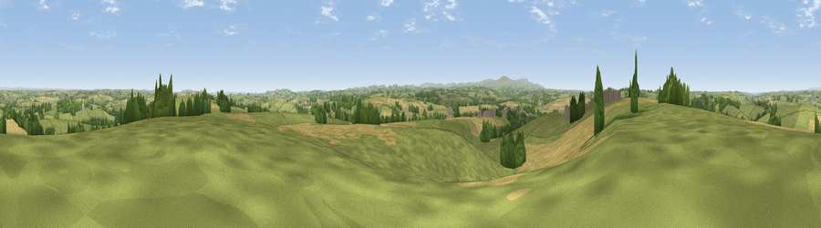

Serstone Hill
#11614 in England · top 14% of its area beats it · near BowThe view, rendered

A 360° render of this exact spot computed from the terrain model, tree cover and land cover — summer colours, afternoon light, calibrated against photographs of famous viewpoints. Real trees, hedges and buildings will differ in detail.
The panorama
Grey silhouette: terrain skyline in each direction (720 bearings, Earth curvature and refraction included). Dashed green: skyline with trees (+15 m) and buildings (+8 m) as obstacles. Blue strip: how far the ground is visible on each bearing.
Where the view opens
Wedge length = distance to the farthest visible ground on that bearing (vegetation-aware). Rings at 10, 25 and 50 km.
What fills the view
69% grassland · 22% cropland · 8% woodland ·
Angular shares of the visible panorama (visual magnitude), not map area. Landscape diversity 0.37 (0–1 Shannon).
Key numbers
More beautiful places nearby
The staircase of upgrades: each row has a higher view potential than everything closer. Driving times are estimates from straight-line distance, calibrated against real road routing — check an actual route before setting out.
| Place | Direction | Drive | Score |
|---|---|---|---|
| Viewpoint near Copplestone | E · 5 km | ~12 min | 62.3 |
| Woolsgrove Hill | E · 6 km | ~13 min | 64.0 |
| Viewpoint near Venny Tedburn | SE · 9 km | ~18 min | 70.1 |
| Viewpoint near Pathfinder Village | ESE · 13 km | ~24 min | 71.0 |
| Viewpoint near Drewsteignton | S · 14 km | ~25 min | 74.4 |
| Viewpoint near Drewsteignton | S · 14 km | ~25 min | 75.1 |
| Butterdon Hill | S · 14 km | ~26 min | 76.4 |
| Viewpoint near Whitestone | ESE · 15 km | ~27 min | 79.8 |
50.81066, -3.79792 · source: dobih hill · position refined by local search. Computed location — check access rights before visiting.